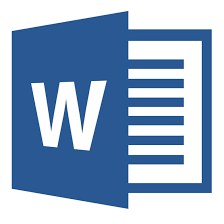

Office Word

O Microsoft Word é um editor de textos, para Windows, Mac, Android e iOS, muito popular em todo o mundo e também um dos favoritos dos brasileiros. Acessível tanto online, pela nuvem, como também em uma versão com discos do pacote Office, o programa é uma das ferramentas mais poderosas e potentes para trabalhar com textos. Edite documentos simples, com imagens, links, gráficos, tabelas, entre outros elementos.
O Word não é o mais popular editor de textos do mundo à toa. Ele possui interface intuitiva, layout bonito e possui ferramentas poderosas para edição dos seus documentos. É muito fácil usar o programa e aproveitar todos os recursos que ele disponibiliza, o que agrada bastante.
O único ponto negativo do software para PC fica por conta de demorar um pouco para carregar – o que depende das especificações do seu computador. Nos testes do TechTudo, ele foi rodado em um PC com Windows 7, AMD E-300 de 1 GHz, com 2 GB de RAM, e ocorreu uma certa demora no carregamento – apesar de, posteriormente, ele funcionar bem.
Já o comportamento do app para Android e iOS é exemplar, boa estabilidade, mesmo com muitos documentos abertos. Copiar texto com imagens da web e colar no Word funciona muito bem e demonstra como a Microsoft trouxe o verdadeiro editor de textos do PC para o Android.
O uso no aplicativo exige um certo grau de integração com outros apps, como OneDrive e Dropbox, portanto é bom ter esses programas instalados também no PC. Com isso, o acesso aos documentos é natural e a sincronização graças à nuvem permite que você comece a editar um texto no Word do PC e termine no tablet, e vice-versa.
Poucas coisas no Microsoft Word para Tablets é diferente do PC. Dentre elas, podemos destacar a opção de leitura que transforma as páginas em folhas que podem ser “passadas” como em um livro, facilitando a leitura.
O único problema aparente é que o aplicativo exige uma boa quantidade de recursos do seu tablet. Uma boa prática é não ficar alternando entre joguinhos e o Word, pois você pode perder o que estava digitando ou lendo.
| Recurso | Descrição |
|---|---|
| A aba Design | A aba Design adicionada na versão 2013 consolida todas as ferramentas de design em um só lugar, tornando-as mais fáceis de encontrar. |
| Guias de alinhamento | Se nas opções de layout de uma imagem (ou de objetos como um gráfico ou SmartArt) você escolher uma disposição como “Quadrado”, guias de alinhamento (as linhas verdes na imagem abaixo) irão surgir mostrando quando uma imagem está alinhada com o topo de um parágrafo ou título. Com isso é moleza alinhar texto e imagens e você não precisa mais recorrer ao “olhômetro”. As guias também mostram quando o objeto está alinhado com pontos chave da página, como as margens esquerda ou direita. |
| Modo de leitura | Se você usa mais o Word para ler documentos do que para criá-los, vai gostar do Modo de Leitura, que automaticamente coloca o documento em tela cheia e oculta as barras de ferramentas de edição e formatação. Clique nas setas na tela para trocar de página (ou, em uma tela sensível ao toque, faça um gesto da direita para esquerda com o dedo), ou mude o modo de exibição para Layout do Papel (em Modo de Exibição / Layout) para rolar a página verticalmente. Dê um clique com o botão direito do mouse em uma palavra desconhecida para ver sua definição (usando o dicionário integrado ao Word) e dê dois cliques em uma imagem, tabela ou gráfico para ampliá-lo. |
| Colaboração simplificada | Se você colabora com outras pessoas na criação de documentos do Word, sabe como rapidamente as discussões podem se tornar difíceis de acompanhar, já que o Word trata cada comentário como se fosse um novo tópico. Mas no Word 2013 é possível responder diretamente a um comentário clicando no ícone da “folha” ao lado dele. Com isso você pode ter toda a discussão, que aparece como um pequeno balão à margem do documento, sobre determinado ponto dentro de uma única caixa de comentário. Também é possível proteger o recurso de Controle de Alterações com uma senha, evitando que ele seja inadvertidamente (ou propositalmente) desativado. E com o novo recurso Marcação Simples é mais fácil ocultar marcações complexas e visualizar a versão “final” do documento. É possível alternar entre os modos (Marcação Simples, Toda a Marcação, Sem Marcação, Original) em um menu na aba Revisão. |
| Edição de PDFs dentro do Word | O Word 2013 não só permite abrir um documento em PDF, como também permite editá-lo sem a necessidade de um aplicativo extra. Você também pode editar os dados dentro de tabelas e mover imagens no documento. Quanto terminar você pode salvar o documento no formato PDF ou como um documento do Word. É um recurso essencial para quem trabalha com PDFs com frequência. |
| Modo de leitura | Se você usa mais o Word para ler documentos do que para criá-los, vai gostar do Modo de Leitura, que automaticamente coloca o documento em tela cheia e oculta as barras de ferramentas de edição e formatação. Clique nas setas na tela para trocar de página (ou, em uma tela sensível ao toque, faça um gesto da direita para esquerda com o dedo), ou mude o modo de exibição para Layout do Papel (em Modo de Exibição / Layout) para rolar a página verticalmente. Dê um clique com o botão direito do mouse em uma palavra desconhecida para ver sua definição (usando o dicionário integrado ao Word) e dê dois cliques em uma imagem, tabela ou gráfico para ampliá-lo. |
| Opções de layout mais acessíveis | No Word 2013 há novas opções de layout que tornam tarefas como fazer o texto “fluir” ao lado de uma ilustração muito mais fáceis. Quando você clica em uma imagem, gráfico ou SmartArt um ícone de Opções de Layout aparece à sua direita. Clique sobre ele para abrir um pop-up onde você pode controlar como o texto e imagem interagem, e ver os resultados em tempo real. Você também pode fazer a imagem se mover junto com o texto ou fixar sua localização na página. E clicando no link Ver mais você abre a velha janela Layout, com mais opções para o posicionamento do objeto na página. Como nos outros aplicativos do Office 2013, um painel de formatação surge quando você clica com o botão direito do mouse sobre uma imagem ou objeto e escolhe a opção Formatar imagem... ou Formatar objeto... no menu. Ao trabalhar com imagens você pode fazer de ajustes básicos como brilho, nitidez ou saturação a operações mais complexas, como aplicar efeitos de perspectiva, rotação 3D, brilho e sombras. |
| Novas ferramentas para lidar com bordas em tabelas | Formatar uma tabela com bordas em diferentes espessuras e estilos sempre foi um problema. Mas a ferramenta Pincel de Borda torna isso muito mais fácil. Para acessá-la clique na tabela e em Ferramentas de Tabela / Design / Pincel de Borda na barra de ferramentas. Basta escolher um estilo e espessura de linha, uma cor para a “caneta” e pintar as bordas da tabela clicando e arrastando o mouse sobre elas. Você também pode escolher entre estilos de tabela e bordas pré-definidos. |
| Mais recursos para tabelas | As ferramentas para tabelas no Word sempre foram fracas, mas o Word 2013 finalmente resolve o problema. Para adicionar uma nova linha à uma tabela basta parar o cursor do mouse à esquerda da tabela, no ponto onde quer que a linha seja inserida. Um ícone de (+) irá aparecer, e basta clicar nele. E o mesmo recurso pode ser usado para inserir colunas. O ícone Excluir na mini barra de ferramentas que surge ao clicar com o botão direito do mouse sobre uma tabela torna fácil excluir linhas, colunas ou até a tabela inteira. |